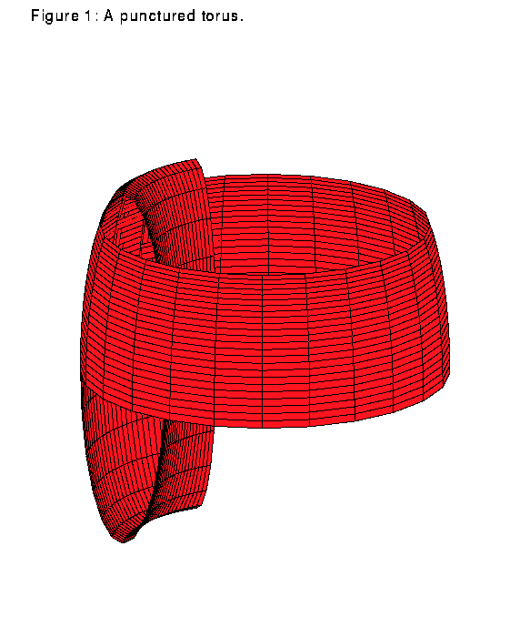

Part 1 of this article discussed some of the background of the following conjecture, which K.M. Kuperberg has recently disproved:
Seifert Conjecture: Every non-vanishing vector field on the three-sphere has a periodic orbit.
In this article, I give an outline of Kuperberg's construction of an infinitely differentiable counterexample. Kuperberg's construction builds on Wilson's construction mentioned in part one. Namely, on every compact manifold of characteristic zero and dimension greater than three, Wilson constructs a non-vanishing infinitely differentiable vector field with no periodic orbit.
Wilson's Construction
Given a manifold as above of dimension n greater than 3, Wilson starts with a non-vanishing vector field with a finite number of periodic orbits. He then modifies the vector field in a small strangely-shaped neighborhood of a point of a periodic orbit. This neighborhood is called a plug. The modified vector field has the property that it breaks a periodic orbit without vanishing or creating additional periodic orbits. After a finite number of modifications, the vector field on the manifold has no periodic orbits.
Here is a description of Wilson's plug to modify a vector field; assume that the original vector field is constant in the (0,0,...,1) direction at each point in a cube in R^n. This is a reasonable assumption, since any non-vanishing vector field in a small neighborhood looks like this under a change of coordinates. The strange shaped plug mentioned above is an embedding of (T^2) x ([0,1]^(n-3)) x ([0,1]) into this cube. Thus we describe below a vector field for points (x,y,z) in (T^2) x ([0,1]^(n-3)) x ([0,1]).
This vector field has some very important properties:
1. It matches smoothly with the original vector field on the boundary. Since (T^2) x ([0,1]^(n-3)) can be embedded in R^(n-1) for n greater than 3, the z coordinate of the embedded plug corresponds to the last coordinate for the cube. Thus the condition amounts to having z'=1 on the boundary.
2. The vector field has no periodic orbits inside the plug.
3. Any orbit which flows into and out of the plug has the same x and y values on exit as on entrance.
4. There is an orbit which flows into but never out of the plug.
Property 1 guarantees that the modified vector field is still smooth. 2 implies that locally there are no periodic orbits, and 3 implies that the new vector field does not create new periodic orbits globally for the manifold, since we chose a neighborhood on which there was only one periodic orbit. In order to do this, Wilson uses a vector field which has a mirror image property; for this vector field this means: for z in (0,1/2), the flow winds irrationally around the torus. In order to get back to the original x value, for z in (1/2,1), the flow unwinds in the x direction. In other words it flows irrationally, but in the opposite direction. This relies on the fact that z of the embedding corresponds to the last coordinate of R^n. Finally, 4 means that we can get rid of the periodic orbit. Thus these four properties are enough to give a satisfactory counterexample.
Here is the vector field. All vectors are of length one:
When z in (0,1/2),
x'=kf(x), f irrational rotation on the torus, k to normalize the vector field y'=0 z'=g(y,z), where g(0,1/4) g greater than 0 everywhere else.
When z in (1/2,1) , we use the mirror image property:
x'=-kf(x) y'=0 z'=g(y,1/2-z).
We can find a g so that 1,2, and 3 hold. 4 holds since some orbit reaches (x,0,1/4). Since y'=z'=0, the orbit remains at (x1,0,1/4) for all time. Since the rotation on the torus is irrational, the orbit never has the same x value again. Thus the counterexample holds.
Schweitzer's Counterexample
Schweitzer's construction in S^3 is based on Wilson's plug. Again, assume the initial flow constant in the z direction on a cube in R^3. We are no longer guaranteed property 3 since we cannot use the mirror image property. In order to preserve this property, rather than using the whole torus, Schweitzer uses a punctured torus P crossed with [0,1]. Due to a construction of Denjoy, there is a C^1 flow on such a punctured torus which has no periodic orbits. Although it is still impossible to embed P in the plane, Schweitzer retains 3 by embedding (P)x([0,1]) in R^3 in such a way that although things may enter and exit the plug twice, they keep property 3 each time. The trick here is that he makes the two parts of the punctured torus with the same z component parallel. Figures 1 and 2 show the standard embedding for the punctured torus and P to show that P really is another punctured torus. Like Wilson's plug, this new vector field still breaks the orbit of one point while allowing all other points to pass through without any change in their orbit. The construction of Denjoy is only C^1, so this is a C^1 vector field.

Kuperberg's Counterexample
Kuperberg's idea is to use the original Wilson plug. In order to fit it into three-dimensional space, she uses a one-dimensional torus x([0,1])x([0,1]), as opposed to using T^2 crossed with intervals. The problem is that a map on a one-dimensional torus has a periodic orbit, and there are two z values for which the flow is purely around a circle. Thus the plug creates two new orbits for each that it removes. We could try to remove the new orbits by attaching new plugs, but this will create new periodic orbits. Thus Kuperberg uses a different idea. By cleverly reinserting the plug into itself, she manages to let the flow of the plug kill off its own periodic orbits. She manages to do this in such a way that the vector field remains infinitely differentiable. With this example, Kuperberg has disproved the Seifert conjecture.
References:
Krystyna M. Kuperberg, "A C^infinity counterexample to the Seifert conjecture in dimension three," preprint, 1993.
P.A. Schweitzer, "Counterexamples to the Seifert conjecture and opening closed leaves of foliations," Annals of Math. 100(1974), 386-400.
Wilson, "On the minimal sets of non-singular vector fields," Annals of Math. 84(1966), 529-536.
This article and the previous are based on a lecture by Richard McGehee. McGehee's lecture took place February 24, 1994, as part of the Dynamics and Mechanics seminars at the University of Minnesota.
![[HOME]](se2_files/home.gif) The Geometry Center Home Page
The Geometry Center Home Page
Comments to:
webmaster@www.geom.uiuc.edu
Created: April 16 1994 ---
Last modified: Jun 18 1996